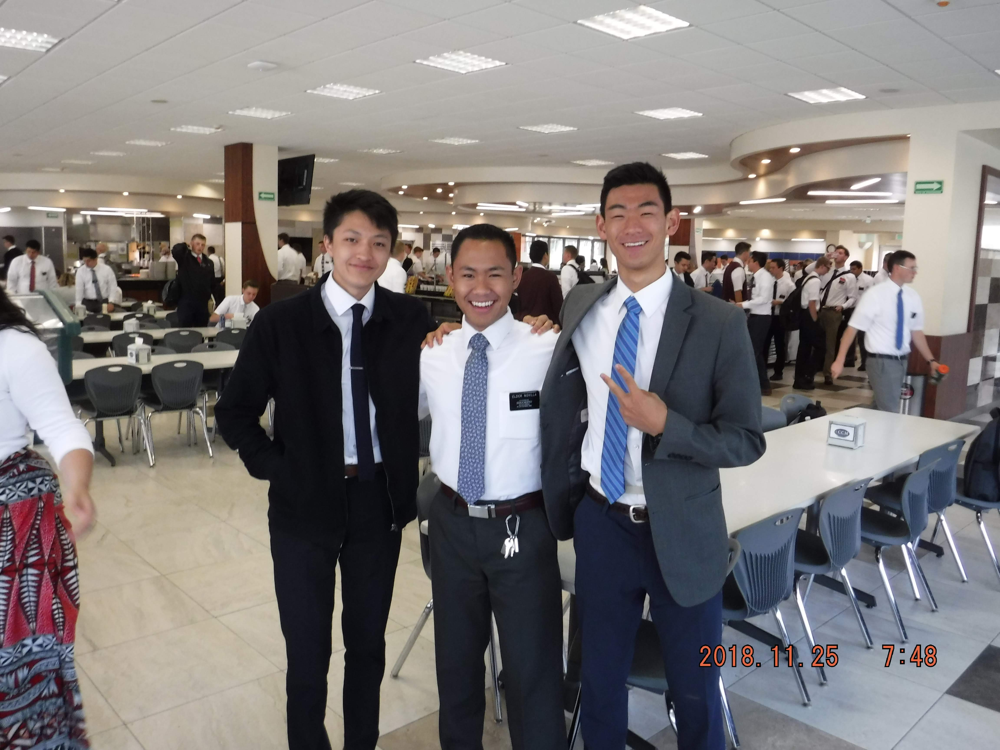

About Me
Humble Beginnings
I was born as the first Son of Stacey and Takuto Yamada on the 19th of November 1999 in a small town outside of Austin Texas called Leander. Throughout my life i've lived various places including Tokyo, Japan, Orem, Utah, Highland, Utah, Gilbert, Arizona, various parts of Mexico, South Dakota, and Minnesota. I attended elementary school in Amercan fork at Odyssey Charter school and then went to American Fork Jr High. After leaving Utah, I graduated High School from Perry High School in Gilbert, Arizona in 2018. Upon graduation, I recieved a mission call to serve in the Guadalajara, Mexico mission and for the next 18 months I lived and breathed Español before being reassigned to Nebraska to complete the last 6 months of my service. I now attend Brigham Young University and love my life here!

My Secret Passion
My deepest darkest secret is that I love making balloon animals and I love hockey!Click here to see start your balloon artistry career